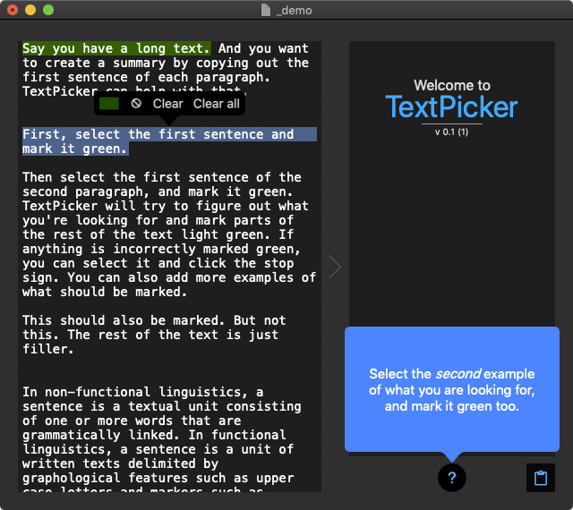
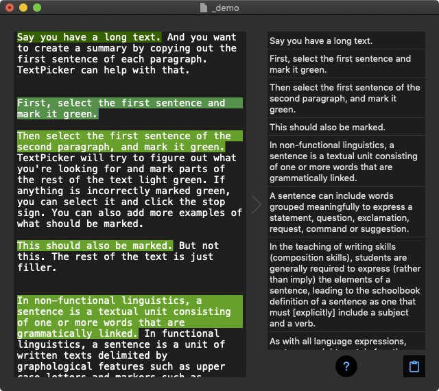

Simple and powerful text automation on the Mac
You
handpick the first two
TextPicker
finds the rest
when it is released
Copy text automatically
If you want to copy out specific information from text files, you have several options:
- Copy out everything manually tedious
- Find software that supports the file format, and can export to the format you need time-consuming potentially-costly
- Use the command line complicated
- If you're a developer: create a script or use regular expressions complicated time-consuming
or
- Use TextPicker quicksimple
What can you use it for?
Handling unknown text data formats
Avoiding mundane manual copy and paste
Cleaning of data
Enabling non-programmers to automate text tasks
Making it easier for programmers to automate text tasks
... and a lot more
{% include mailerlite-TextPicker-form.html %}